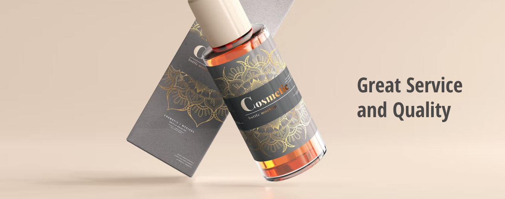

OFFSET & DIGITAL PRESS
Lini Cetak Offset & Lembaran
Digunakan untuk produksi dus kemasan makanan, paper bag, kalender, dan brosur dalam jumlah ratusan hingga ribuan lembar dengan kestabilan warna CMYK yang konsisten.